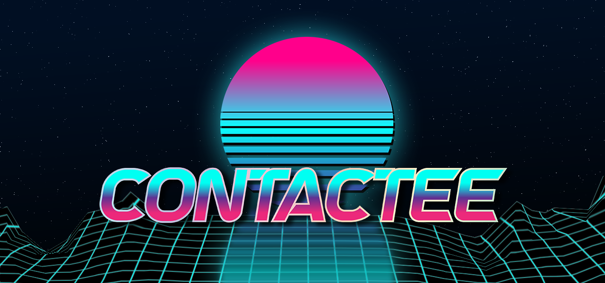

Future Endeavours
Currently, I'm in the process of creating my own visual novel.
A visual novel is an interactive game combining text, visuals, music, and of course, a storyline. To make such a game, I had to teach myself a program called Ren'Py + its language, as well as Python. Other software like Twine and Unity taught me how to navigate the complexities of web language, but the demo is nearly ready.
